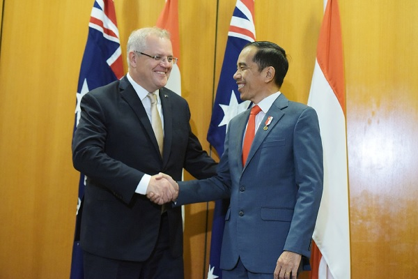
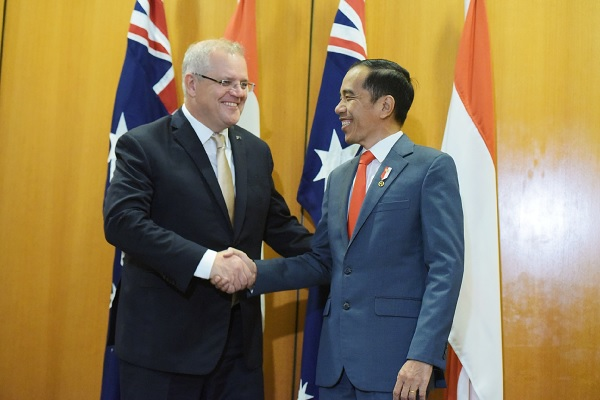
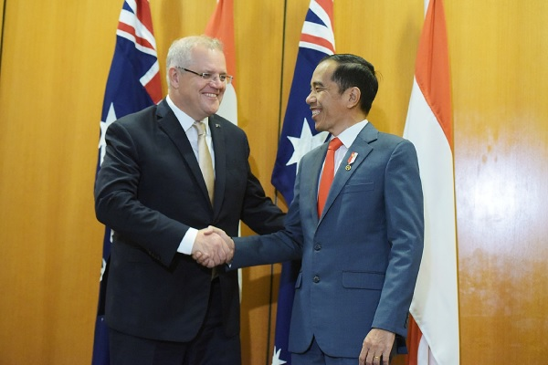
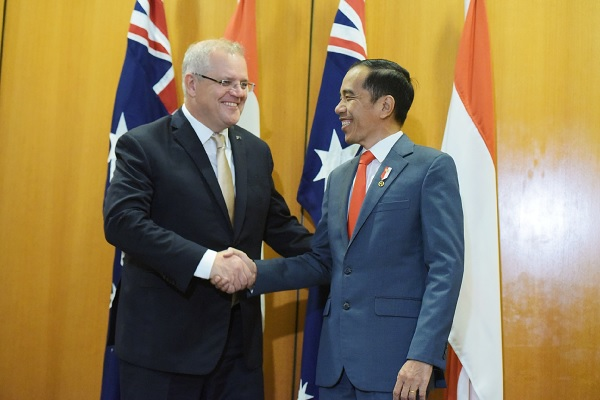

 

Kerjasama Bilateral adalah hubungan antara dua negara dengan tujuan membina hubungan dan menjalin kerja sama dalam berbagai bidang. Bidang tersebut ada dalam bentuk hubungan diplomatik, perdagangan, pendidikan, hingga kebudayaan. Dalam menjalin hubungan kerja sama bilateral, Indonesia cenderung lebih memprioritaskan nilai-nilai saling menghormati, tidak ikut campur urusan dalam negeri negara lain, menolak menggunakan kekerasan, dan mengutamakan konsensus. Kerja sama bilateral dapat terjadi setelah kedua negara menandatangani persetujuan yang akan dijadikan sebagai acuan. Kerja sama ini tidak dilakukan untuk sia-sia saja. Semua hal yang kita lakukan biasanya memiliki sebuah tujuan tertentu. Kerja sama bilateral tentunya akan memiliki suatu tujuan. Secara umum, kerja sama ini untuk memberikan, memperkuat, meningkatkan, dan mengembangkan suatu kerangka kerja sama dan interaksi yang efisien di antara kedua institusi di bidang pemeriksaan sektor publik, atas dasar kesetaraan dan keuntungan bersama sesuai dengan hukum, peraturan, dan kebijakan nasional masing-masing. Secara khusus kerja sama bilateral dimaksudkan untuk meningkatkan kedekatan hubungan dan kerja sama dalam rangka meningkatkan kedekatan hubungan dan kerja sama dalam rangka meningkatkan kapasitas pemeriksaan maupun non pemeriksaan.
Saat ini Indonesia telah menjalin kerjasama bilateral dengan 162 negara, mulai dari kawasan Asia Tenggara hingga Eropa Barat dan Afrika. Serta satu teritori khusus yang berupa non-self governing territory. Negara-negara mitra kerjasama Indonesia ini terbagi dalam delapan kawasan (Afrika, Timur Tengah, Asia Timur dan Pasifik, Asia Selatan dan Tengah, Amerika Utara dan Tengah, Amerika Selatan dan Karibia, Eropa Barat, dan Eropa Tengah dan Timur). Hubungan luar negeri Indonesia dengan negara-negara lain telah dimulai sejak Indonesia memproklamasikan kemerdekaannya pada 17 Agustus 1945. Berbagai forum, baik bilateral, regional maupun multilateral telah dirancang oleh Indonesia bersama-sama dengan negara-negara sahabat.
Kerja sama bilateral memberikan beberapa manfaat bagi negara yang melakukan kerja sama dengan Indonesia, serta negara Indonesia sendiri. Manfaat kerja sama bilateral bagi Indonesia adalah Perlindungan warga negara Peningkatan dalam berbagai bidang Peningkatan hubungan antar negara
Contoh: Kerja sama Indonesia dan Brazil dalam upaya meningkatkan mutu genetik protein hewani dan pengembangan peternakan nasional. Dalam pertemuan ini Direktur Jenderal Peternakan dan Kesehatan Hewan (Dirjen PKH) I Ketut Diarmita mengadakan pertemuan dengan Wakil Menteri Pertanian Negara Brazil Eumar Roberto Novacki di Kantor Ditjen PKH, Ragunan Jakarta, Senin siang. Pertemuan ini untuk menjalin hubungan bilateral kedua negara agar semakin erat, serta untuk memanfaatkan peluang kerja sama yang dapat dilakukan oleh kedua negara. Pemerintah Brazil menyampaikan beberapa tawaran kerjasama, diantaranya adalah adanya keinginan Brazil untuk melakukan kerja sama dalam memenuhi kekurangan pasokan daging sapi di Indonesia. Brazil melihat konsumsi protein hewani di Indonesia saat ini masih sangat rendah bila dibandingkan anggota ASEAN lainnya, sehingga mereka ingin meningkatkannya. Brazil juga menyampaikan populasi sapi cukup besar di salah satu negara bagian hingga 14 juta ekor dengan sistem pemeliharaan yang efisien, sehingga harga daging sapi di negara mereka bisa lebih murah. Indonesia mengundang Indonesia ke Brazil untuk melihat sistem kesehatan hewan dan jaminan keamanan pangan di negara mereka. Brazil menawarkan untuk kerja sama dalam perbaikan mutu genetik, pakan, food safety dan traceability. Di dalam pertemuan ini, Indonesia juga memanfaatkan peluang kerjasama dengan menawarkan ekspor obat hewan ke Brazil. Selain itu Indonesia juga ingin mengembangkan jenis rumput Brazil, serta mendatangkan investor Brazil untuk membangun breeding farm di Indonesia. Eumar Roberto Nobacki juga siap untuk bertukar teknologi dan tindak lanjut kerjasama ini akan dilakukan dengan mengaktifkan lagi working group antar kedua negara yang sudah lama tidak aktif.